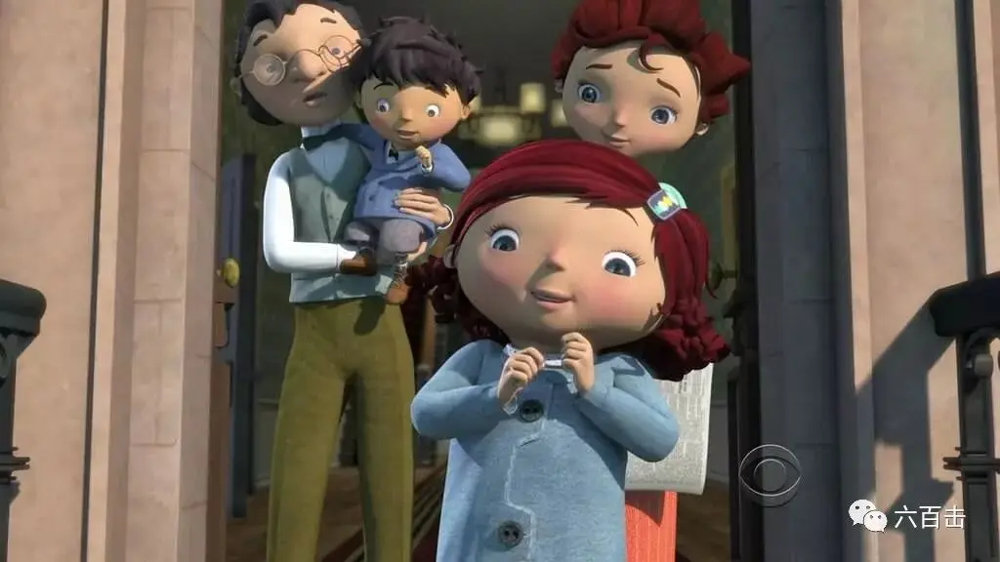
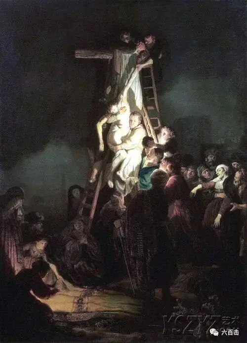
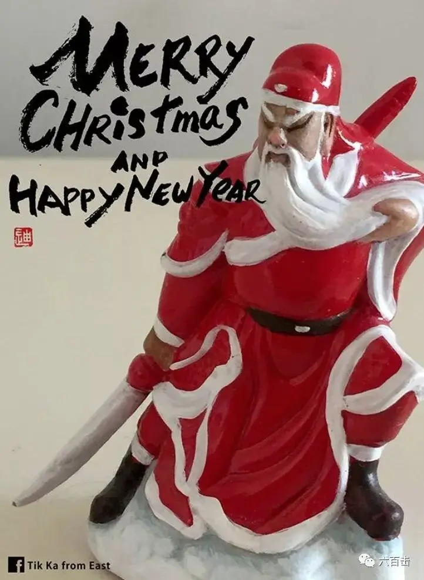
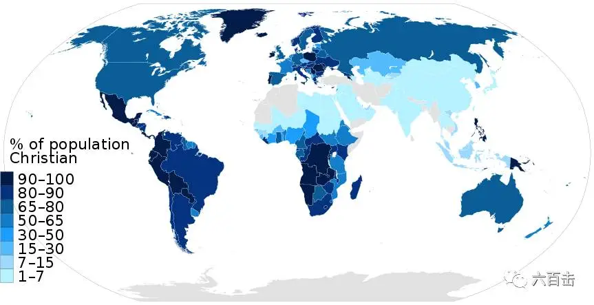
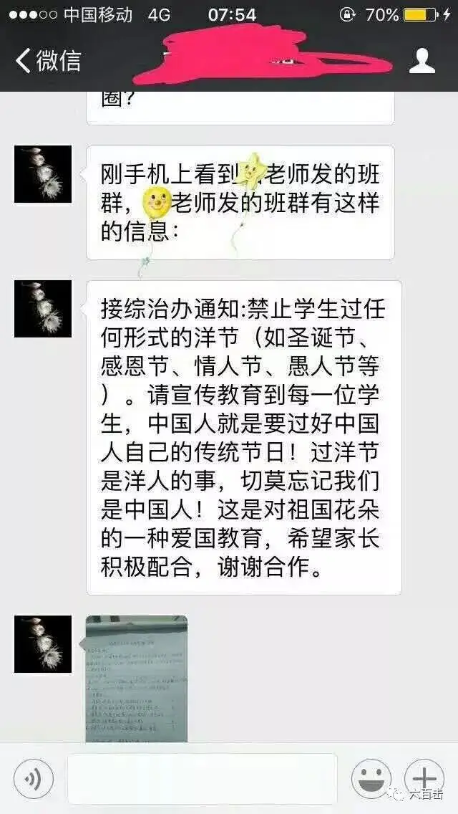

圣诞节来了，五六岁的小孩会充满童真地问：
“爸爸，圣诞老人真的存在么？”
你要怎么回答这个问题。
如果你说不存在，告诉孩子这是一个骗局，根本没有圣诞老人这回事，孩子会觉得很奇怪，圣诞老人不存在的话，为什么大家还要过圣诞节呢？
面对孩子，这的确不是一个很好回答的问题。
1897年，一名叫帕吉尼娅的小孩问了爸爸同样的问题。
这个爸爸倒是很“机智”。
他说“你去问问纽约的《太阳报》，报社说有，那就真的有了”。
没想到，帕吉尼娅还真给纽约太阳报写了一封信。
令人感动的是，对于这样一封信，太阳报的编辑进行了诚恳的回复。
根据此事改编的动画短片剧照

童真遇上了睿智，就有了下面这封可爱又充满智慧的信：
记者先生：
“我8岁，我的朋友里边，有的小孩说“圣诞老人是没有的”。
我问爸爸，爸爸说，“去问《太阳报》看，报社说有，那就真的有了。”
因此，拜托了，请告诉我，圣诞老人真的有吗?
——帕吉尼娅，纽约市西95街115号。”
太阳报编辑的回信：
“帕吉尼娅，让我们来回答你的问题。
你的朋友说没有圣诞老人，那是错的。
在那个孩子的心中，肯定是染上了现时流行的什么都怀疑的习性。
什么都怀疑的人，只相信眼睛看得见的东西。
什么都怀疑的人，是心地狭窄的人。
因为心地狭窄，不懂的东西就很多。
虽然那样，还断定自己不懂的事情都是谎话。
不过，人心这个东西，大人也好，小孩也好，本来是非常小的啊。
在我们居住的这个无限广阔的宇宙里，我们人的智慧，就像一条小虫那样，是的，就像蚂蚁一样小。
要想推测广阔的、深奥的世界，就需要能够理解所有事物、了解所有事物巨大的、深邃的智慧。
是的，帕吉尼娅，圣诞老人是有的，这绝不是谎话。
在这个世界上，如同有爱、有同情心、有诚实一样，圣诞老人也确确实实是有的。
你大概也懂得吧，正是充满这个世界的爱、诚实，才使你的生活变得美好了，快乐了。
假如没有圣诞老人，这个世界该是多么黑暗，多么寂寞!
就像没有你这样可爱的孩子，世界不可想象一样，没有圣诞老人的世界，也是不可想象的。
没有圣诞老人来减轻我们痛苦，孩子般的信赖、诗、爱情故事，也许全都没有了。
我们人类能体味得到的喜悦，大概只剩下眼睛能看到的、手能摸到的、身体能感觉到的东西了。
并且，儿童时代充满世界的光明，说不定也会全都消失了。
怎么说没有圣诞老人呢?
不相信有圣诞老人，和不相信有妖精是一样的。
试试看，诞圣节前夜，让爸爸给你雇一个侦探，让他监视一下全纽约的烟囱怎么样?也许能抓住圣诞老人噢！
但是，即使看不到从烟囱里出来的圣诞老人的身影，那能证明什么呢?
没有人看见圣诞老人。可是，那不能证明没有圣诞老人。
因为，这个世界上最真实的东西，是孩子的眼睛、大人的眼睛都看不见的东西。
帕吉尼娅，你看到过妖精在草地上跳舞吗?肯定没有吧。虽然如此，也不能说妖精是胡编的瞎话。
这个世界上某些看不见的东西，不能看到的东西，绝不是人们在头脑中创造出来的，想象出来的。
我们能分解婴儿的哗啷棒，看它的声音是怎样出来的，里面是怎样组装的。但是，眼睛看不见那遮盖着世界的大幕，不管有多大力气的人，不，即使全世界的大力士一起上，也是拉不开的。
只有信赖、想象力、诗、爱、爱情，才能在某一个时刻，把它拉开，看到大幕后面的、无法形容的、美好的、闪闪发光的东西。
那样美好、闪光的东西，难道是人们编造的瞎话吗?
不，帕吉尼娅，那么确实，那么永恒的东西，就存在于这个世界之上。
说没有圣诞老人?这是哪儿的话!
让我们高兴的是，圣诞老人的确存在。
不止如此，他大概永远不会死亡。
一千年以后，一百万年以后，圣诞老人也会同现在一样，让孩子们的心高兴起来。”
看完太阳报主编诚挚的回信，大虾也被深深的感动了。
他那可爱真诚的语言以及生动形象的比喻，像一道阳光一样，一下子照进了我那傲慢自我的心房中，我感到自己的想象力又重新恢复了。
的确，随着我们一天天的长大，脑子里的知识和世故也越来越多，但是我们的眼界却越来越狭隘，我们的世界只是我们看到并愿意看到的世界。
知识上的增长没有让我们变得更加宽阔，反而更加滋长了一种曲高和寡的骄傲和偏执，这个偌大美丽的世界几乎被我们压缩的只有我们自己。
我们的眼里只有可以悦我们眼目的东西。
我们的心中装着的全都是自己的利益，对于我们不了解的东西，我们常常没有动力也没有兴趣去了解和思考。
甚至有的时候，别人给我们讲一些东西，我们也会很无知地大放厥词或者直接傲慢的打断别人。
我们就像没有任何思考就直接告诉帕吉尼娅圣诞老人根本不存在的无知小孩一样，拒绝对话、拒绝拥抱、拒绝敞开。但是不知不觉中，真理也可能被我们拒绝了。
面对圣诞节，每年总有人要把这种狭隘和偏执表现到极致，没有了解就高喊着抵制洋节。
但是那些抵制圣诞节的人，你们真的知道你们在抵制什么吗？你们了解圣诞节吗？
1、如果你真的要抵制圣诞节，那首先你要废除公元纪年。
因为现在通用的纪年是以圣诞节的主角耶稣降生为起点，2017年也就是耶稣降生2017年。
2、如果你真的要抵制圣诞节，那你也要抵制周末休息日了。
因为这个传统也是来自于基督教，根据《圣经》创世纪里记载，上帝第一天造出光，第二天造出空气，第三天创造大海和陆地，第四天创造昼夜星辰，分昼夜定节令，第五天创造鱼鸟，第六天创造虫兽及人，到第七天，天地万物创造完毕，上帝就要休息，这一天就是安息日。
按照西方规定的历法计算正好是星期六，也就是一星期中的最后一天，所以作为安息日的星期六就要休息。
后来，罗马帝国的皇帝君士坦丁大帝因为信奉基督教，规定耶稣复活日即星期日为礼拜日，是合法假日，后来被世界各国采用。
于是就有了星期六、星期日休息的惯例。 这种星期制度也是君士坦丁大帝的创举，中国则在清末引入星期制度。
以前我们的老大哥曾经就“逆天而行”，1929年，斯大林曾在苏联强制执行5天1星期，然后是6天1星期。
他的目的之一是把包含宗教因素的星期天排除在外，但是，这些努力都以失败告终。
3、如果你真的抵制圣诞节，那你要把但丁、托尔斯泰、狄更斯、莎士比亚、安徒生、陀思妥耶夫斯基等人的书丢一边了，因为他们的作品有很浓厚的基督教色彩。
鲁迅、冰心、林语堂、老舍的书最好也少看，他们的作品也加了基督教的料。
4、如果你真的抵制圣诞节，巴赫、亨德尔、门德尔松、贝多芬等人的音乐就不要再听了，他们为耶稣创作了太多的音乐。
达芬奇、米开朗琪罗、拉斐尔、丢勒、伦勃朗这些人的画也不用去研究了，他们的作品基本上都是圣经故事。
抵制彻底的话，学美术、音乐的学生会很感谢你，因为基本上没什么可以学了。
伦勃朗名作《基督下十字架》

5、如果你真的要抵制圣诞节，牛顿三大定理不用学了，因为牛顿就是个“神棍”。
《牛顿自然哲学著作选》记载了牛顿的信仰告白：
现在我们可以更趋近一步去欣赏这大自然的美并使自己陶醉于愉快的深思之中。
从而更深刻地激起我们对伟大的创世主和万物主宰的敬爱和崇拜的心情。
这才是哲学的最优美和最有价值的果实。
如果有谁从事物的这些最明智最完善的设计中看不到全能创世主的无穷智慧和善良意志，那么他一定是个瞎子。
而如果拒绝承认这些，那他一定是一个毫无感情的疯人。
不仅仅是牛顿，爱因斯坦神神叨叨，他说：
无限高超的神在我们微弱心智所能觉察的琐细小事上显示他的存在。
我对之心悦诚服。
我的信仰由此构成。在我心灵深处，确信有个超越的智能彰显在不可思议的宇宙中，这构成我对神的信念。
根据《1901-2000年诺贝尔奖获得者大全》统计，诺贝尔奖得主中有信仰的人占了80%以上，广义基督教信仰的占40%多，真正的无神论者也只有百分之十几。
诺贝尔物理学奖获得者共计161人。其中有明确宗教信仰者116人，占72%；极可能或可能有宗教信仰者20人，占12.4%；
本人信仰不明，但承认有宗教背景者8人，占5%；无神论或无宗教信仰者12人，占7.5%；无资料记录者5人，占3.1%。
不信教的12个人中，包括居里夫妇，他们是“反教权论者”；包括杨振宁与李政道，他们被标为“无宗教归属”；
标明为“无神论”的只有一个人，即晶体管之父威廉•肖克利(William Bradford Shockley)，1956年获物理学奖。
另外几个华人获奖者的情况：
1976年获奖的丁肇中，基督教；1997年获奖的朱棣文，无资料记录；1998年获奖的崔琦，属路德教派(Lutheran)。
所以，如果你真的要抵制圣诞节，诺贝尔奖是一颗“毒瘤”，最好也少碰。

6、如果你要真的抵制圣诞节，权贵们就不要嘴上说着抵制美国、抵制圣诞，暗地却把家人和银子往人家那转移了，这些国家可都是要过圣诞节的。
根据皮尤研究中心的统计，你们最适合前往朝鲜、北非以及阿拉伯。
2014年皮尤研究中心统计资料

7、如果你真的抵制圣诞节，那你对人权就不要太指望了，因为现代人权的根基是建立在基督教信仰上。
美国《独立宣言》中写道：
人人生而平等，造物主赋予他们若干不可让与的权利，其中包括生存权、自由权和追求幸福的权利；
法国的《人权宣言》写道：
国民议会在上帝面前和庇护下，承认并且宣告下述人和公民的权利:一、人们生来并且始终是自由，在权利上是平等的……
8、如果你打着抵制洋货、抵制洋思想的口号反对圣诞节，那先请你：
放下你的苹果手机
脱掉你的西装
删掉所有的美剧
将google、facebook、twwiter或者凡是英文标识的软件都卸载掉
然后告诉你的孩子以后要和英语说88
max主义也丢的远远的，毕竟也是洋思想。

9、你的抵制意味着忘恩负义
今日我们的偏见不仅仅来自于我们的无知，还来自于我们话语体系的暴力性。
当大家在对话和语言上习惯了“洋鬼子”、“洋节”、“精神鸦片”、“迷信”这样攻击性极强的词语时，你还可能心平气和地去了解圣诞节和基督教么？
现在很多人想到传教士，就和打着传教名义偷盗我们国家文物的无耻之徒划为等号。
事实上，传教士在推进中国现代化上扮演着重要角色：
1、利玛窦为了帮助中国人学习自己民族的语言，为中国人发明了拼音；
伯格理为苗族发明了苗文，这些传教士在很多中国少数民族语言和文化的保护和传承上起到了极大的作用。
2、历史书中只介绍了商务印书馆是中国第一家出版机构，却只字未提传教士在其中的功劳。
正是传教士重新发展和革新了早已在中国失传的印刷术，才为商务印书馆奠定了技术和管理基础。
为中国教育、新闻、出版工作做出了极大的贡献，而不明真相的我们却还浸淫在四大发明古国的梦幻中。
3、传教士将自己一生的生命和青春投入到了中国现代化教育建设中。
大家去查一查现在的北京大学、清华大学、南京大学、复旦大学、山东大学、中国政法大学等高等学府是怎么建立的。
你一定会为我们的遗忘感到羞耻。
这也某种程度上解释了为什么民国会出现那么多大师，建国后却再无大师的现象。
鲁迅、冰心、费孝通、金庸、林语堂、荣毅仁、贝聿铭等大师级人物都曾求学于教会学校。
而我们现在的教育却功利到学生老师对真理、正义漠不关心的地步。
4、传教士帮助中国建立了现代化医院、门诊、医学院。
如果你去查一下中国比较老的医院，前身都与传教士有关，比如说广州市脑科医院、中国医科大学、沈阳市妇婴医院、北京第六医院等等。
限于篇幅，这里不展开，大家可以一个一个查一查背后的故事。
每一所医院建立的背后都有传教士的身影。你再将我们现在的医院和一百年前传教士建立的医院对比一下，看看是进步了还是退步了。
5、在日本清华战争期间，传教士更是冒着生命危险在上海、南京拯救了几十万中国人的生命。
比如说东方的辛德勒拉贝，他不仅救了25万中国人，他翔实准确的日记更是成为中国对于日本暴行控诉最有力的证据之一
...........
司徒雷登在燕京大学

要说的还有很多，那个苦难的时代，每个地方，每个角落都有着传教士的身影和鲜血。
但令人寒心的是，我们的历史书没有如实记录和展现真实。
取而代之的是似是而非的话语以及空洞无聊的教条。
有血有肉的历史被我们“智慧”的抽象成：导火线、直接原因、根本原因、标志........
而能够让这些伟大的传教士谦卑下来，放弃优越、不计代价地帮助中国的力量都是来自于圣诞节要纪念的耶稣。
希望在这个圣诞节里，我们不要像那些无知又傲慢的小孩那样，未经思索就断言：圣诞老人根本不存在，耶稣的事情与我们无关。
我们需要像帕吉尼娅那样，诚实敞开地面对耶稣，有疑问就去考证。
我们可以去看看耶稣到底是不是历史中一个真实的人，我们可以了解耶稣的生平和故事。
我们可以进一步去了解圣经，看看圣经所说的是神话还是真理。
如果这些功课你都做了，你一定会发现一个新的世界，一个眼睛无法看到的真实世界，而不是你自我投射的世界。
也一定会收到那份来自耶稣最美的祝福。
耶稣用他的生命告诉你，最荣耀的君王可以为罪人受死的能力才是真正的能力。
这是一种可以让华盛顿在权利高峰放弃权利的能力。
这是一种可以让拥有巨额财富的比尔盖茨裸捐的能力。
而我们的能力却是抓取、抓取、再抓取，控制、控制、再控制。
我们的能力是破坏，是骄傲，是把自己都能感动哭的大话和套话。
而耶稣却谦卑的蹲下来给他的门徒洗脚。
这才是真正的福音和平安。
最后，大虾也将根据帕吉尼亚事件改编的高分动画短片分享给大家。
由于腾讯视频无法上传，大家可以点击阅读原文，在线观看电影。
也可以在后台回复帕吉尼亚获取电影资源。
2017年马上要结束了，大虾也非常感谢大家一直的陪伴和支持，祝大家圣诞快乐。
相关推荐：
这个圣诞节不得不看的十部电影，你看过几部？
《芳华》| 他那么好却被伤的如此之深
这里没有挑逗你眼目情欲的小鲜肉
也没有挑动你肉体情欲的段子
更没有膨胀你今生骄傲的鸡血
我们只在乎那些最质朴真诚的作品
在那里我们才能恢复真正的想象力
我们也坚信这才是我们真正需要的

ID:Six_hundred_hits
长按二维码，一键关注
【六百击】
-END-
电影评论
尽情分享朋友圈

苹果打赏通道